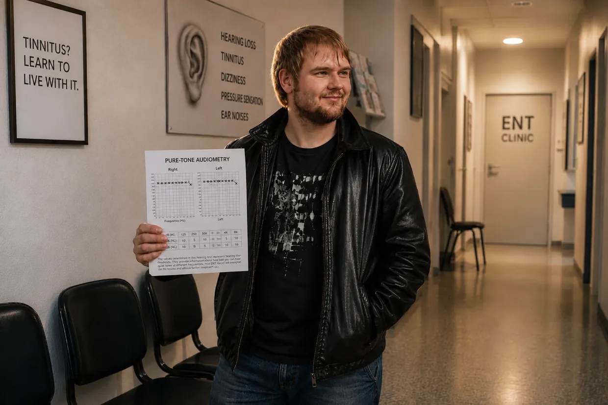

My Way Out of Tinnitus Hell (The Short Version)
Hello, my name is Dustin Müller.
If you’ve just landed on this page, you’re probably stuck in the same hell I was in back then. The whole story—every ENT visit, every audiogram, every breakthrough—is in my two-part biography. This is the short version: how I brought my tinnitus down from 100 to 0. Twice.
1. Fall 2011: The Club
I was 23, in perfect health, and thought my body could take anything. My cousin talked me into going to a club for the very first time: U60311 in Frankfurt. Naive as I was, I stood in the best available spot: just six to eight meters in front of the speakers, for four hours. As I was leaving, there was an insane amount of pressure in my ears, everything muffled as if I were underwater. The next morning, I fell back onto my pillow with a strong pull to the left. I thought: Time will sort this out.
On day 3, I woke up and heard beeping, like a refrigerator. I checked the power outlet, the alarm clock, the computer. Then I covered my ears with my hands. It was coming from inside me. On the left, a hum, a rushing sound, sirens, and loud beeping—on the right, quiet beeping.
2. Six ENT Doctors
Online, it said: sudden hearing loss, inner-ear damage, treat it within 14 days or it becomes chronic. So, off to the ENT. The first one said, “Yeah, don’t listen to it, listen to some music”—and walked out of the room. After the hearing test: my hearing was permanently damaged, he said, and I had to learn to live with it. The second prescribed ginkgo and said headphones were “helpful as a distraction.”
I followed the advice, played music in the evenings and white noise at night—and a few weeks later came the second episode of sudden hearing loss. On the drive to school, loud music on the car radio; then in class, distorted hearing, painful hypersensitivity, and half a somersault inside my head: my vision spun, followed by swaying dizziness and a pull to the left. The third doctor offered me antidepressants. The fourth, a tinnitus specialist, explained that the noise was all in my head. Six ENT doctors in total. None of them could help me. I cut my own birthday celebration short because I couldn’t understand anyone anymore, took a break from school, and sat at home, isolated.
3. The Suction Device at the University Hospital
Then a chance event changed everything. Because of inflammation of the ear canal, I dragged myself to Frankfurt University Hospital at night. The doctor suctioned out my ear canals with a small suction device—and at that exact second, the tinnitus in my left ear howled, aggressively, immediately. Then the same thing on the right. That meant the all-in-my-head theory couldn’t be right: a phantom in your head doesn’t react in real time to noise in your ear. The source was still down there. While I was still in the chair, I made up my mind to find out what happens when you consistently cut out noise.
4. Silence

I received cortisone infusions and had thick gauze bandages put in both ears because of the inflammation. And the tinnitus grew quieter. At first, I thought: the cortisone. Then it hit me like lightning: my ears had been completely cut off from the outside world for days. A few days later came the proof—a bang right in my ear, the tinnitus howled, BUT returned to its previous level within seconds. It wasn’t static. It responded to noise.
So I spent months in near-absolute silence: no music, no headphones, no everyday noise, eventually even without the ticking wall clock in my room. The tone grew about 25% quieter (subjectively, of course—you don’t exactly measure tinnitus with a ruler). And then it stopped there. My body was stuck. Jaw, neck, atlas adjustments: I tried it all. None of it helped.
5. Vitamin B12
The breakthrough came from the living room. My father was injecting himself with vitamin B12 for a neurological condition—a small ampoule of red liquid—and was visibly doing better. I read up on it: B12 is the nerve vitamin, and vegetarians with gastritis are at risk. Both applied to me. My blood test: right at the bottom of the range, only just above the deficiency threshold. My primary care doctor: “still within the normal range,” no injections.
So that evening, I had my father give me an injection, feeling really uneasy about it. (Important: I explicitly advise against trying this without a doctor’s guidance.) The next morning, the tinnitus was a good 40% quieter. I lay there, close to tears. And I understood: It’s about energy. Dr. Wilden’s website said his laser stimulated the cells’ energy production—ATP. That’s exactly what the body needs B12 for.
6. Lecithin: The Building Block
Even so, the tone kept getting louder again over the course of the day. Then, one night, I was in the hospital with biliary colic; the doctor wanted to operate, and I went home at my own risk. (Important: if you have gallstones, be sure to seek a doctor’s guidance—this is my own personal experience in an acute situation, not treatment advice.) A forum led me to lecithin granules, 30 grams. Three days later, the tinnitus had suddenly improved by 60 to 65%.
Why? Lecithin is a building block for the sheath around nerves—the myelin layer—and for every cell membrane. That’s exactly what gets damaged by noise, “like the plastic insulation of a thin electrical cable being destroyed.” Oh man: it’s not just about energy, but building materials too.
7. The Final Healing
With the complete B complex—B1, B2, B6, B9, and B12 as injections, B3, B5, and B8 as tablets—the improvement reached 80%. Then I loaded myself up: 30 grams of lecithin, amino acids, 3 grams of omega-3, vitamin C, minerals (zinc, magnesium), and micronutrient concentrates (LaVita, Dr. Rath). And I kept living in silence.
The Fade-Out

The tone grew quieter in the mornings, the evening setbacks shorter. At first, it was gone until noon, then until the afternoon. Until that one morning when I woke up, pushed the earplugs deep into my ears to check—and there was nothing. After almost two years. My body had repaired it itself.
That was the first time I had tinnitus. What came next was the real hell—and years later, the craziest experiment of my life.
Important note:
What you are reading here is my personal account. Every body and every story is different.

The CFS Crash and the Niacin Flush
The Disastrous Chain Reaction: The CFS Crash
Anyone who thinks everything was fine after I was healed of tinnitus the first time is mistaken. But this life-threatening crash was not the “price” of healing my tinnitus. It was a disastrous chain reaction that threw my entire system completely out of balance.
Back then, I was living at full throttle: little sleep, getting a lot done, constantly wired. In the short term, it felt like energy. I didn’t notice that I was running down my reserves.
A mix of unresolved underlying trauma, the chemical aftereffects of cortisone, this relentless cellular overstimulation, and a gut completely destroyed by aggressive antibiotics (and acid blockers) finally pulled the rug out from under me.
Then an Epstein–Barr virus infection (infectious mononucleosis) entered the picture as well, and my system collapsed completely. The diagnosis: chronic fatigue syndrome (CFS). I was nearly bedridden for over a year. My mitochondria (the powerhouses of the cell) nearly stopped producing energy (ATP) altogether.
The €6,800 Dead End and My Greatest Act of Arrogance

In my desperation, I indiscriminately bought everything I could find. From American heavyweights such as Life Extension or Thorne to expensive vitamin C infusions, KPU treatments, and hormone replacement therapies. I tried to undergo simulated altitude training (IHHT), but had to abandon the attempt because I panicked, and was on the verge of being admitted to a specialist CFS clinic.
In that one year, I burned through around €6,800 on this insanity—no exaggeration. The result? Absolutely zero. My body wasn’t taking any of it in.
The tragicomic irony: during my late-night research, I came across the website of a German company called FitLine. I spent exactly 4 or 5 seconds on the site, took one look at it, and arrogantly thought: “What kind of stupid name is that for some trendy sports drink? I need heavy-duty medicine, not colorful juices.” I completely overlooked the 100% money-back guarantee. My ego and my half-baked knowledge cost me many more months in CFS hell.
2013: The Niacin Flush and the Cellular Restart
At my absolute lowest point in 2013, I was bedridden 98% of the time. Then YouTube dropped a video into my feed by an alternative health practitioner who explained things from an unbelievably holistic perspective and with real expertise. When I saw that he was only 30 kilometers away, I dragged myself there with the last of my strength because my mother was already flatly refusing to drive me to any more doctors.
He mixed a powder into water for me, creating a bright orange liquid. It was the exact FitLine set I had arrogantly dismissed with a click some time earlier!
What happened after 6 to 8 minutes was absolute insanity: the drink triggered a massive niacin flush. My entire body became extremely warm, a massive surge of blood shot through my veins, and my skin turned red. For the first time in over a year, I felt real, physical energy in my cells.
The real problem: my body was trapped behind a threefold barrier. First, constant stress and antibiotics had thrown my gastrointestinal tract completely out of balance (dysbiosis). Second, my gut simply lacked the cellular energy (ATP) to break down solid capsules. And third, my cells had become so acidic from running on anaerobic emergency power that they barely let any nutrients in. I was starving at the cellular level despite full plates.
The highly bioavailable liquid nutrient set suddenly broke through this massive absorption barrier.
I put my pride aside and, from then on, took the products consistently every single day. The results were almost surreal:
- After 20 days: I could climb stairs normally again.
- After 2 months: I was no longer bedridden and could ride my bike hard again.
- After 3 to 4 months: I completed a computer course without a physical crash.
- After almost 2 years: I was physically fitter than ever and working for Rewe Online in an extremely grueling physical job—including voluntary double shifts!
The Craziest Experiment of My Life

After CFS, one thought kept nagging at me: the first time I had tinnitus, I had hardly any energy and had to shut myself away in a quiet room for half a year. What happens if my body, now with this extreme level of energy, is hit by noise again? Will it repair itself “on the fly,” so to speak, in everyday life?
⚠️ Important note: Before I describe this experiment, I want to make it clear that I could have suffered permanent damage. Do not attempt this under any circumstances.
I made a decision that would sound absolutely insane to any doctor: I deliberately brought on tinnitus a second time to prove my theory with my own body.
Back then, I completely abandoned the caution that had protected me and partied hard (partly because I wanted to take the risk of doing the experiment, and partly because I still felt an enormous appetite for life—I had healed from CFS several years earlier). During that night, I noticed only a temporary warning sign (a feeling of pressure). That, however, was what made me push it to the limit. For weeks, I bombarded my ears with excessive amounts of loud music through headphones—even when listening itself had already become sheer physical pain. It hurt, and I kept going.
Until that one evening: I was sitting at my computer, put on my headphones—and in the sudden silence, I heard the faint beeping in my left ear. The tone was back. On the one hand, sheer horror; on the other, a delusional fascination.
For my test, I made a risky decision to keep the tone from disappearing again right away: I stopped my supplement routine completely (abstinence), deliberately cutting out my FitLine set and my lecithin.
The Crash, the Panic, and the Real-Time Proof
It took a month and a half to two months for my system to finally collapse under this sustained provocation and with its protective shield gone. The tinnitus came back at a brutal level—about 75% as loud as it had been the very first time I had tinnitus—accompanied by an entirely new, chaotic mix of sounds (the typical sine-wave tone, a bizarre Morse-code-like signal, a low-pitched hiss, and a siren).
As I lay in bed that evening, reality hit me brutally hard. The noises were so deafening that raw panic surged through me: Have I maybe ruined my life for good with this stupid experiment?
Before I took action to counter it, I did three more tests:
- The Jaw-Neck Test: By moving my head and jaw through a wide range, I could definitely influence both the character and volume of the sound!
- The Noise Test (Proof Against Masking): I blasted myself with white noise at extreme volume for 2–3 minutes (the very sound doctors recommend for masking). When I took off the headphones, there were a few seconds of absolute dead silence before the tinnitus howled back louder and more aggressively than ever. For me, this was proof: noise forces the sick hair cells to pump ions nonstop. Once the headphones come off, the cell’s battery is completely drained—for a few seconds it is physically shut down and “mute” (refractory period). As soon as it recharges even the slightest bit, the emergency signal slams back at twice the volume!
- The Clap Test (Mechanical Shock): One hard clap of my hands directly in front of my ear made the tinnitus howl angrily at that exact second.
Healing in Everyday Life (Without “Monk Mode”)
The next morning, enough was enough. The experiment had reached its peak. I began my comeback with my healing stack:
- The complete FitLine set (Activize, Restorate, Basics, and omega-3 with Q10).
- Lecithin granules from the drugstore.
One crucial thing was deliberately missing this time: I no longer took any bitter amino acid powders! The reason: the first time I had tinnitus, I was suffering from severe chronic gastritis and could not break down proteins from normal food. Now, years later, restoring my gut health had left my digestion in perfect working order. My healthy gastrointestinal tract could now easily extract the amino acids from normal food.
The biggest difference: I had absolutely no desire to cut myself off from life as I had the first time. After beating CFS, my appetite for life was simply too great. I chose a smart compromise: I consistently avoided extreme noise spikes (no car stereo at full blast, no headphones, no clubs), but I did not withdraw completely. I continued to go shopping, visit fairs, go to the movies, and live a relatively normal life.
The “Huh?!” Moment and Absolute Silence
The unbelievable happened: within just the first few weeks (between weeks 2 and 3), I suddenly realized: Man, the tone is already responding!
The sounds grew quieter and thinner. First, that completely new hissing sound in my left ear disappeared without a trace, then the constant whistling tone noticeably thinned out too. I sat there completely dumbfounded and thought: “Huh?! Okay, wow… I’m basically still living a completely normal life here, only avoiding the major noise spikes, and yet this whole thing is already responding?!”
My healing process took roughly three to four months. The frequencies switched off systematically, one by one:
My right ear was the first to go quiet, and after about two months it was completely healed. In my left ear, the siren and the low, truck-like rumble faded away until only the high-frequency sine-wave tone (the absolute final boss) remained.
Just as the first time around, the mornings were the crucial indicator. It felt as though a slider kept moving closer and closer to zero. Toward the end of the third month, the tone had become so quiet in the evening that I could only detect it while wearing earplugs in a completely silent room or sitting in an absolutely quiet bathroom.
To finish the job once and for all, I once again got some special vitamin B12 drops and put them directly under my tongue every day to give my system one very last kick through the lining of my mouth.
And then, at some point during the weeks that followed, it was completely gone. It disappeared. Without a trace. 100%.
I had passed the craziest test of my life. And now I knew for sure: the first time, a lot of it had been chance and luck. Not the second time. The tinnitus went away because I gave my cells what they needed—and that was right in the middle of normal everyday life.
A Short, Honest Word in Closing (Real Talk)
I know exactly how this entire story of illness and healing must read to an outsider. If I had not experienced all of it firsthand—the cascade of absurd “coincidences,” my initial rebellion against the ENT doctor, the plunge into CFS, the €6,800 I spent on failed treatments, and finally that crazy moment when the YouTube algorithm served up, right on my screen, the alternative health practitioner who would save me and was only 30 kilometers away—I would probably dismiss it myself as a cheap Hollywood script or a made-up fairy tale. It simply sounds too crazy to be true.
But that is exactly why I’m putting all my cards on the table here. This is not a made-up healing story, not a marketing gimmick, and certainly not baseless esoteric speculation. This is the cold, hard truth of physics and cell biology. I have every single piece of physical evidence of this hell and this healing: my medical audiograms with their massive dips at particular frequencies, the lab reports, the diagnoses, and the invoices from clinics and therapists.
I’m not telling you all of this to entertain you. I’m telling you because a page like this was exactly what I needed back then.
📖 Want the whole story in detail?
That was the short version in 2 acts. I wrote down the complete story—every audiometric test, every desperate ENT visit, every breakthrough, every chemical reaction down to the last detail—in the full version. In two long parts, honest and unfiltered. Make yourself a cup of tea. ☕
👉 Here’s the full story: Part 1: The Ride Through Hell · Part 2: The High-Risk Experiment